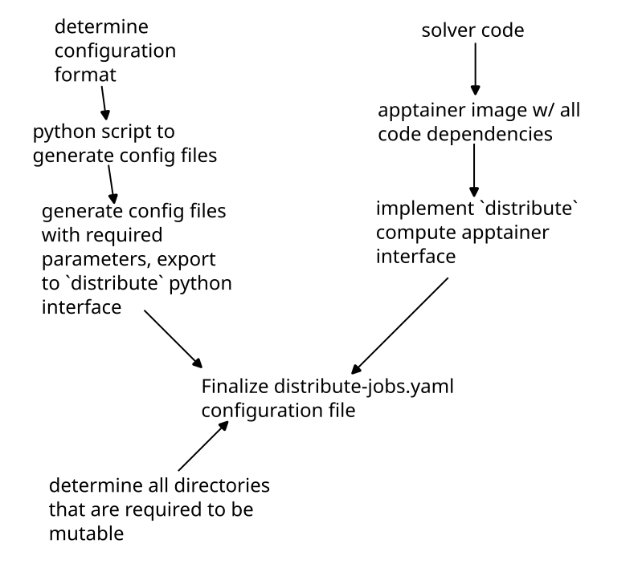

distribute
distribute is a relatively simple command line utility for distributing compute jobs across the powerful
lab computers. In essence, distribute provides a simple way to automatically schedule dozens of jobs
from different people across the small number of powerful computers in the lab.
Zero downtime computing
distribute relies on some simple programming interfaces. From a batch of jobs (1-100s), distribute
will automatically schedule each job in the batch to a compute node and archive the results on the
head node. After archival, the results of a batch are easy to pull down to a personal computer
using a simple set of query rules and the original configuration file submitted to the cluster.
Excess data can be deleted from a personal computer and re-downloaded later at will.
distribute is also partially fault tolerant: if a compute node goes down while executing a job,
the job will be rescheduled to another compatible node. Once the original compute node is
restored, jobs will automatically resume execution on the node.
Heterogeneous Compute Clusters
distribute works on a simple "capability" based system to ensure that a batch of jobs
is only scheduled across a group of compute nodes that are compatible. For instance, specifying that
a job requires large amounts of memory, a GPU, or a certain number of CPU cores.
SLURM Compatibility
You can seamlessly transpile a configuration file for hundreds of distribute jobs to a SLURM-compatible format.
Therefore, you can schedule several jobs on a local distribute cluster and then rerun the jobs
on a University cluster with a finer computational stencil or longer runtime seamlessly.
Pausing Background Jobs
Since lab computers also function as day-to-day workstations for researchers, some additional
features are required to ensure that they are functional outside of running jobs. distribute solves this issue
by allowing a user that is sitting at a computer to temporarily pause the currently executing job so that
they may perform some simple work. This allows users to still quickly iterate on ideas without waiting
hours for their jobs to reach the front of the queue.
This behavior is incompatible with the philosophy of other workload managers such as SLURM.
Matrix Notifications
If setup with matrix API keys, distribute can send you messages on the completion of your
jobs.
Python API
We have thus far talked about all the cool things we can do with distribute, but none of this is free. As
a famous Italian engineer once said, "There is no such thing as free lunch." There are two complexities
from a user's point of view:
- Generating Configuration Files
- Packaging software in a compatible way for the cluster
To alleviate the first point, distribute provides a short but well documented python package
to generate configuration files (short files can also be written by hand).
This makes it easy to perform sweeps with hundreds of jobs over a large parameter space.
An example python configuration is below:
meta:
batch_name: your_jobset_name
namespace: example_namespace
matrix: ~
capabilities:
- gfortran
- python3
- apptainer
python:
initialize:
build_file:
path: /path/to/build.py
jobs:
- name: job_1
file: execute_job.py
- name: job_2
file: execute_job_2.py
Installation
In order to install distribute you must have a recent version of rustc and cargo.
Install instructions can be found here.
Once you have it (and running cargo shows some output), you can install the project with
cargo install --git https://github.com/fluid-Dynamics-Group/distribute --force
and you are good to go! If you run into any trouble installing file an issue on github.
Python api install
After rustc and cargo are installed, the python package can be installed with
pip3 install distribute_compute_config
Overview
distribute operates similar to a programming function. Using apptainer to precompile on a personal machine,
or a python script to compile on a compute node,
a solver is defined. After a solver is defined, distribute schedules jobs to each compute node with a compiled solver on it.
Each job contains some input files that are downloaded from the head node to compute node and placed in a predefined directory
for the solver code to access.
After execution is finished, the output files from the solver (saved in a predefined directory) are uploaded to the head node to be downloaded by the user at a later point in time.

In some sense, you can think of distribute as a function of purely the inputs: some input files are placed in a directory
as the input to the function, and your solver code ("function") places the outputs in another directory.
Predefined Directories
There are some special directories that define where input files are placed and output files to be placed for proper archiving
| Apptainer | Python | |
|---|---|---|
| input file directory | /input | /distribute_save |
| output file directory | ./input | ./distribute_save |
In the case of python, you are responsible for tracking the correct paths to the input and output directories as they are only relative locations.
For apptainer, the input and output directories are mounted into the container from the host filesystem.
Configuration
Configuration files are fundamental to how distribute works. Without a configuration file, the server would not
know what nodes that jobs could be run on, or even what the content of each job is. Configuration files
are also useful in pulling the files you want from your compute job to your local machine. Therefore,
they are imperative to understand.
Configuration files
As mentioned in the introduction, configuration files (usually named distribute-jobs.yaml) come in two flavors:
python scripts and apptainer images.
The advantage of python scripts is that they are relatively easy to produce: you need to have a single script that specifies how to build your project, and another script (for each job) that specifies how to run each file. The disadvantage of python configurations is that they are very brittle - the exact server configuration may be slightly different from your environment and therefore can fail in unpredictable ways. Since all nodes with your capabilities are treated equally, a node failing to execute your files will quickly chew through your jobs and spit out some errors.
The advantage of apptainer jobs is that you can be sure that the way the job is run
on distribute nodes is exactly how it would run on your local machine. This means that, while it may take
slightly longer to make a apptainer job, you can directly ensure that all the dependencies are present, and that there wont
be any unexpected differences in the environment to ruin your job execution. The importance of this cannot be
understated. The other advantage of apptainer jobs is that they can be directly run on other compute clusters (as
well as every lab machine), and they are much easier to debug if you want to hand off the project to another lab
member for help. The disadvantage of apptainer jobs is that the file system is not mutable - you cannot write
to any files in the the container. Any attempt to write a file in the apptainer filesystem will result in an error
and the job will fail. Fear not, the fix for this is relatively easy: you will just bind folders from the host file system
(via configuration file) to your container that will be writeable. All you have to do then is ensure that your
compute job only writes to folders that have been bound to the container from the host filesystem.
Regardless of using a python or apptainer configuration, the three main areas of the configuration file remain the same:
| Section | Python Configuration | Apptainer Configuration |
|---|---|---|
| Meta |
|
The same as python |
| Building |
|
|
| Running |
|
|
How files are saved
Files are saved on the server using your namespace, batch_name, and job_names. Take the following configuration file that specifies
a apptainer job that does not save any of its own files:
meta:
batch_name: example_jobset_name
namespace: example_namespace
matrix: @your-username:matrix.org
capabilities: []
apptainer:
initialize:
sif: execute_container.sif
required_files: []
required_mounts:
- /path/inside/container/to/mount
jobs:
- name: job_1
required_files: []
- name: job_2
required_files: []
- name: job_3
required_files: []
The resulting folder structure on the head node will be
.
└── example_namespace
└── example_jobset_name
├── example_jobset_name_build_ouput-node-1.txt
├── example_jobset_name_build_ouput-node-2.txt
├── example_jobset_name_build_ouput-node-3.txt
├── job_1
│ └── stdout.txt
├── job_2
│ └── stdout.txt
└── job_3
└── stdout.txt
The nice thing about distribute is that you also receive the output that would appear on your terminal
as a text file. Namely, you will have text files for how your project was compiled (example_jobset_name_build_ouput-node-1.txt
is the python build script output for node-1), as well as the output for each job inside each respective folder.
If you were to execute another configuration file using a different batch name, like this:
meta:
batch_name: example_jobset_name
namespace: example_namespace
matrix: @your-username:matrix.org
capabilities: []
# -- snip -- #
the output would look like this:
.
└── example_namespace
├── another_jobset
│ ├── example_jobset_name_build_ouput-node-1.txt
│ ├── example_jobset_name_build_ouput-node-2.txt
│ ├── example_jobset_name_build_ouput-node-3.txt
│ ├── job_1
│ │ └── stdout.txt
│ ├── job_2
│ │ └── stdout.txt
│ └── job_3
│ └── stdout.txt
└── example_jobset_name
├── example_jobset_name_build_ouput-node-1.txt
├── example_jobset_name_build_ouput-node-2.txt
├── example_jobset_name_build_ouput-node-3.txt
├── job_1
│ └── stdout.txt
├── job_2
│ └── stdout.txt
└── job_3
└── stdout.txt
Therefore, its important to ensure that your batch_name fields are unique. If you don't, the output of
the previous batch will be deleted or combined with the new job.
Examples
Examples creating each configuration file can be found in the current page's subchapters.
Apptainer
Configuration File
A default configuration file can be generated with :
distribute template apptainer
---
meta:
batch_name: your_jobset_name
namespace: example_namespace
matrix: ~
capabilities:
- apptainer
- gpu
apptainer:
initialize:
sif:
path: execute_container.sif
required_files:
- path: /file/always/present/1.txt
alias: optional_alias.txt
- path: /another/file/2.json
alias: ~
- path: /maybe/python/utils_file.py
alias: ~
required_mounts:
- /path/inside/container/to/mountL
jobs:
- name: job_1
required_files:
- path: job_configuration_file.json
alias: ~
- path: job_configuration_file_with_alias.json
alias: input.json
meta section
The meta section is identical to the meta section of python.
The namespace field is a string that describes all of the batch_names that
are a part of this namespace.
The batch_name is an a simple string to identify what jobs are in this batch.
If your distribute cluster has been configured by your adminstrator for matrix support,
you can specify the matrix field to be your matrix username in the form of @your-user:matrix.org
and you will receive a message when all of the jobs in this job batch finish.
The capabilities section is a list of dependencies that are required to be present on the compute node.
Since you are responsible for bundling all your dependencies in your apptainer image, the only capabilities
requires here are apptainer. If you require a GPU on the compute node, you can also specify the gpu
capability.
On the server, each batch_name must be unique to each namespace. This means the results of submitting
two batches of batch name name_xyz with identical namespaces is undefined. This is because on
the server each batch name is a subdirectory of the namespace. For example, if we have run
two job batches job_batch_01 and job_batch_02 under the namespace example_namespace,
the directory structure might look like
example_namespace/
├── job_batch_01
│ ├── job_1
│ │ └── stdout.txt
│ ├── job_2
│ │ └── stdout.txt
│ └── job_3
│ └── stdout.txt
└── job_batch_02
├── job_1
│ └── stdout.txt
├── job_2
│ └── stdout.txt
└── job_3
└── stdout.txt
For example, if I am running many aeroacoustic studies with OpenFoam, a namespace might be
austin_openfoam_aeroacoustic, and then I run batches with incremented names,
supersonic_aeroacoustic_00X, subsonic_aeroacoustic_00X, transsonic_aeroacoustic_00X. My meta
section for one of these job batches would look like:
meta:
batch_name: subsonic_aeroacoustic_004
namespace: austin_openfoam_aeroacoustic
matrix: @my-username:matrix.org
capabilities:
- apptainer
- gpu
apptainer section
the apptainer section has two subsections: initialize which handles the setup of the solver
and jobs which specifies a list of jobs that are part of this job batch.
initialize section
The sif key contains a path to a .sif file that was constructed from apptainer build.
Information on building these .sif files is available here.
Ensure that you .sif file also contains the correct %apprun distribute interface.
The required_files contains a list of files, each file with a path and alias.
The path is a path to a file on disk, and the alias is a filename as it will appear
in the /input directory of your .sif solver when executed. A more in-depth
explanation of this behavior is available in the input files section
required_mounts provides a way to create mutable directories in your container from within a compute
node. Ensure that this directory does not exist in this container since it will be created at runtime.
More information on binding volumes (and creating mutable directories) is found here.
jobs
This field contains the list of jobs and the locations of their input files on disk. For each job, there are two configuration keys:
name: the name of the job in this batch. Job names must be unique to the batch_name field from
the meta section: there cannot be two jobs with the same name in the same batch.
required_files: a list of files, each containing a path key and optional alias key. These
files are identical in configuration to the required_files from the initialize field above.
Each file has path (a location on disk) and an optional alias field, or the name of the file
as it will be represented in the /input directory when that job is run.
For example, if the jobs section of the config file contained
jobs:
- name: job_1
required_files:
- path: job_configuration_file.json
alias: ~
- path: job_configuration_file_with_alias.json
alias: input.json
then this batch would have one job named job_1. When this job is executed, the /input directory of
the apptainer image will contain a file job_configuration_file.json and input.json since the
second file was aliased. Additionally, any files specified in the required_files of the initialize
section will also be present in the /input directory.
Workflow Differences From Python
The largest difference you will encounter between the apptainer and python configurations is the way in
which they are executed. While each python job has its own file that it may use for execution, the apptainer
workflow simply relies on whatever occurs in %apprun distribute to read files from /input and execute the
binary directly. Therefore, each job in the configuration file only operates on some additional input files
and the .sif file never changes. This is slightly less flexible than the python configuration (which allows
for individual python files to run each job), but by storing your input files in some intermediate structure
(like json) this difficulty can be easily overcome.
Apptainer Overview
Apptainer (previously named Singularity) is a container system often used for packaging HPC applications. For us,
apptainer is useful for distributing your compute jobs since you can specify the exact dependencies required
for running. If your container runs on your machine, it will run on the distributed cluster!
As mentioned in the introduction, you must ensure that your container does not write to any directories that are not bound by the host system. This will be discussed further below, but suffice it to say that writing to apptainer's immutable filesystem will crash your compute job.
Versus Docker
There is an official documentation page discussing the differences between docker
and apptainer here. There a few primary
benefits for using apptainer from an implementation standpoint in distribute:
- Its easy to use GPU compute from apptainer
- Apptainer compiles down to a single
.siffile that can easily be sent to thedistributeserver and passed to compute nodes - Once your code has been packaged in apptainer, it is very easy to run it on HPC clusters
Apptainer definition files
This documentation is not the place to discuss the intricacies of apptainer definition files. A better overview can be found in the official apptainer documentation. If you are familiar with docker, you can get up and running pretty quickly. Below is a short example of what a definition file looks like:
Bootstrap: docker
From: ubuntu:22.04
%files from build
# in here you copy files / directories from your host machine into the
# container so that they may be accessed and compiled.
# the sintax is:
/path/to/host/file /path/to/container/file
%post
# install any extra packages required here
# possibly with apt, or maybe pip3
%apprun distribute
# execute your solver here
# this section is called from a compute node
One important note from this file: the %apprun distribute section is critical. On a node
with 16 cores, your distribute section gets called like this:
apptainer run --app distribute 16
In reality, this call is actually slightly more complex (see below), but this command is illustrative of the point. You must ensure you pass the number of allowed cores down to whatever run script / solver you are using, or start an MPI. For example, to pass the information to a python script:
%apprun distribute
cd /
python3 /run.py $1
We make sure to pass down the 16 we received with $1 which corresponds to "the first argument that this bash script was
called with". Similar to the python configuration, your python file is also responsible for parsing this value and running
your solver with the appropriate number of cores. You can parse the $1 value you pass to python using the sys.argv value
in your script:
import sys
allowed_processors = sys.argv[1]
allowed_processors_int = int(allowed_processors)
assert(allowed_processors_int, 16)
You must ensure that you use all (or as many) available cores on the machine as possible! For the most part, you do not want to run single threaded processes on the distributed computing network - they will not go faster.
If you are building an apptainer image based on nvidia HPC resources, your header would look something like this (nvidia documentation):
Bootstrap: docker
From: nvcr.io/nvidia/nvhpc:22.1-devel-cuda_multi-ubuntu20.05
Building Apptainer Images
Compiling an apptainer definition file to a .sif file to run on the distribute compute is
relatively simple (on linux). Run something like this:
mkdir ~/apptainer
APPTAINER_TMPDIR="~/apptainer" sudo -E apptainer build your-output-file.sif build.apptainer
where your-output-file.sif is the desired name of the .sif file that apptainer will spit out, and build.apptainer is the
definition file you have built. The APPTAINER_TMPDIR="~/apptainer" portion of the command sets the APPTAINER_TMPDIR environment
variable to a location on disk (~/apptainer) because apptainer can often require more memory to compile the sif file
than what is available on your computer (yes, more than your 64 GB). Since apptainer build requires root privileges, it must be run with sudo. The additional
-E passed to sudo copies the environment variables from the host shell (which is needed to read APPTAINER_TMPDIR)
Mutable Filesystem (Binding Volumes)
Now a natural question you may have is this: If volume bindings are specified at runtime - and not
within my apptainer definition file - how can I possibly get additional mutable folders? Am I stuck
with writing to /input and /distribute_save? The answer is no! You can tell distribute what folders
in your container you want to be mutable with the required_mounts key in the initialize section of
your configuration. For example, in the hit3d solver (whose definition file is used as the example
above), the following folder structure at / would be present at runtime:
.
├── distribute_save
├── hit3d-utils-exe
├── hit3d.x
├── input
├── plots
│ ├── energy_helicity.py
│ ├── proposal_plots.py
│ └── viscous_dissapation.py
└── vtk-analysis-exe
However, hit3d requires a folder called output relative to itself. Since this folder is required,
we might be (naively) tempted to simply add a call to mkdir /output in our %post section of the
definition file. However, we would then be creating an immutable directory within the image. Instead,
we simply just need to add this path to our configuration file:
meta:
batch_name: your_jobset_name
namespace: example_namespace
capabilities: []
apptainer:
initialize:
sif: execute_container.sif
required_files:
- path: file1.txt
- path: file999.txt
alias: file2.txt
required_mounts:
- /output # <---- here
jobs:
- name: job_1
required_files:
- path: file3.txt
- name: job_2
required_files: []
By adding this line, your container will be invoked like this (on a 16 core machine):
apptainer run apptainer_file.sif --app distribute --bind \
path/to/a/folder:/distribute_save:rw,\
path/to/another/folder:/input:rw,\
path/to/yet/another/folder/:/output:rw\
16
Input Files
In order for your compute job to do meaningful work, you will likely save some files. But we know that apptainer image files are not mutable. The answer to this problem is binding volumes. A "volume" is container-language for a folder inside the container that actually corresponds to a folder on the host system. Since these special folders ("volumes") are actually part of the host computer's filesystem they can be written to without error. The process of mapping a folder in your container to a folder on the host system is called "binding".
With apptainer, the binding of volumes to a container happens at runtime. Since distribute wants you to have
access to a folder to save things to (in python: ./distribute_save), as well as a folder to read the required_files
you specified (in python: ./distribute_save). Apptainer makes these folders slightly easier to access by binding them
to the root directory: /distribute_save and /input. When running your apptainer on the compute node with 16
cores, the following command is used to ensure that these bindings happen:
apptainer run apptainer_file.sif --app distribute --bind \
path/to/a/folder:/distribute_save:rw,\
path/to/another/folder:/input:rw\
16
Note that the binding arguments are simply a comma separated list in the format folder_on_host:folder_in_container:rw
where rw specifies that files in the folder are readable and writeable.
If your configuration file for apptainer looks like this:
meta:
batch_name: your_jobset_name
namespace: example_namespace
capabilities: []
apptainer:
initialize:
sif: execute_container.sif
required_files:
- path: file1.txt
- path: file999.txt
alias: file2.txt
required_mounts: []
jobs:
- name: job_1
required_files:
- path: file3.txt
- name: job_2
required_files: []
When running job_1, the /input folder looks like this:
input
├── file1.txt
├── file2.txt
└── file3.txt
And when running job_2, the /input folder looks like this:
input
├── file1.txt
├── file2.txt
Storing Results
Simiar to how input files are placed in the /input directory, output files for apptainer
jobs are placed in /distribute_save.
Any file placed in /distribute_save when your apptainer image ends is automatically transported
back to the head node and can be downloaded with the distribute pull command
All directories will be wiped between simulation runs, including /input and /distribute_save.
You may not rely on any files from a previous job to be present in any directory at the start of execution: only
files specified in the corresponing required_files fields will be supplied.
Packaging Solvers
In order to package a given solver into apptainer there are three main tasks:
- Generate a apptainer definition file to compile code
- For large numbers of jobs:
- a python script to generate input files to the solver and generate
distributeconfiguration files
- a python script to generate input files to the solver and generate
- Determine what directories in your container should be mutable (often none), include those paths in your configuration file

Running Locally / Debugging Apptainer Jobs
Because there are a lot of ways that your job might go wrong, you can use the distribute run command
to run an apptainer configuration file in place. As an example, take this test
that is required to compile and run in the project. The apptainer definition file is:
Bootstrap: library
From: ubuntu:20.04
%files
./run.py /run.py
%post
apt-get update -y
apt install python3 -y
%apprun distribute
cd /
python3 /run.py $1
run.py is:
import sys
def main():
procs = int(sys.argv[1])
print(f"running with {procs} processors")
print("writing to /dir1")
with open("/dir1/file1.txt", "w") as f:
f.write("checking mutability of file system")
print("writing to /dir2")
with open("/dir2/file2.txt", "w") as f:
f.write("checking mutability of file system")
# read some input files from /input
print("reading input files")
with open("/input/input.txt", "r") as f:
text = f.read()
num = int(text)
with open("/distribute_save/simulated_output.txt", "w") as f:
square = num * num
f.write(f"the square of the input was {square}")
if __name__ == "__main__":
main()
input_1.txt is:
10
input_2.txt is:
15
and distribute-jobs.yaml is:
---
meta:
batch_name: some_batch
namespace: some_namespace
capabilities: []
apptainer:
initialize:
sif: apptainer_local.sif
required_files: []
required_mounts:
- /dir1
- /dir2
jobs:
- name: job_1
required_files:
- path: input_1.txt
alias: input.txt
- name: job_2
required_files:
- path: input_2.txt
alias: input.txt
the apptainer definition file can be built with these instructions. Then, execute the job locally:
distribute run distribute-jobs.yaml --save-dir output --clean-save
The output directory structure looks like this:
output
├── archived_files
│ ├── job_1
│ │ ├── job_1_output.txt
│ │ └── simulated_output.txt
│ └── job_2
│ ├── job_2_output.txt
│ └── simulated_output.txt
├── _bind_path_0
│ └── file1.txt
├── _bind_path_1
│ └── file2.txt
├── distribute_save
├── initial_files
├── input
│ └── input.txt
└── apptainer_file.sif
This shows that we were able to write to additional folders on the host system (_bind_path_x), as well as read and write output files. Its worth noting that
if this job was run on the distributed server, it would not be archived the same (archive_files directory is simply a way to save distribute_save without
deleting data). The structure on the server would look like this:
some_namespace
├── some_batch
├── job_1
│ ├── job_1_output.txt
│ └── simulated_output.txt
└── job_2
├── job_2_output.txt
└── simulated_output.txt
The outputs of the two simulated_output.txt files are:
the square of the input was 100
and
the square of the input was 225
Python
Python configuration file templates can be generated as follows:
distribute template python
At the time of writing, it outputs something like this:
---
meta:
batch_name: your_jobset_name
namespace: example_namespace
matrix: ~
capabilities:
- gfortran
- python3
- apptainer
python:
initialize:
build_file:
path: /path/to/build.py
required_files:
- path: /file/always/present/1.txt
alias: optional_alias.txt
- path: /another/file/2.json
alias: ~
- path: /maybe/python/utils_file.py
alias: ~
jobs:
- name: job_1
file:
path: execute_job.py
required_files:
- path: job_configuration_file.json
alias: ~
- path: job_configuration_file_with_alias.json
alias: input.json
meta section
The meta section is identical to the meta section of python.
The namespace field is a string that describes all of the batch_names that
are a part of this namespace.
The batch_name is an a simple string to identify what jobs are in this batch.
If your distribute cluster has been configured by your adminstrator for matrix support,
you can specify the matrix field to be your matrix username in the form of @your-user:matrix.org
and you will receive a message when all of the jobs in this job batch finish.
The capabilities section is a list of dependencies that are required to be present on the compute node.
Since you are responsible for bundling all your dependencies in your apptainer image, the only capabilities
requires here are apptainer. If you require a GPU on the compute node, you can also specify the gpu
capability.
On the server, each batch_name must be unique to each namespace. This means the results of submitting
two batches of batch name name_xyz with identical namespaces is undefined. This is because on
the server each batch name is a subdirectory of the namespace. For example, if we have run
two job batches job_batch_01 and job_batch_02 under the namespace example_namespace,
the directory structure might look like
example_namespace/
├── job_batch_01
│ ├── job_1
│ │ └── stdout.txt
│ ├── job_2
│ │ └── stdout.txt
│ └── job_3
│ └── stdout.txt
└── job_batch_02
├── job_1
│ └── stdout.txt
├── job_2
│ └── stdout.txt
└── job_3
└── stdout.txt
For example, if I am running many aeroacoustic studies with OpenFoam, a namespace might be
austin_openfoam_aeroacoustic, and then I run batches with incremented names,
supersonic_aeroacoustic_00X, subsonic_aeroacoustic_00X, transsonic_aeroacoustic_00X. My meta
section for one of these job batches would look like:
meta:
batch_name: subsonic_aeroacoustic_004
namespace: austin_openfoam_aeroacoustic
matrix: @my-username:matrix.org
capabilities:
- apptainer
- gpu
python section
the python section has two subsections: initialize which handles compiling and setting
up all code for execution, and jobs which specifies a list of jobs that are part of this job batch.
initialize section
The build_file key contains a path to a python file.
This python file is responsible for compiling and setting up an environment on the system
to execute all of the jobs in the job batch.
The required_files contains a list of files, each file with a path and alias.
The path is a path to a file on disk, and the alias is a filename as it will appear
in the /input directory when compiling all related tasks.
An in depth explanation of input files is detailed in the input files section
jobs
This field contains the list of jobs, the file used to execute the job, and the location to other input files on disk. For each job, there are three configuration keys:
name: the name of the job in this batch. Job names must be unique to the batch_name field from
the meta section: there cannot be two jobs with the same name in the same batch.
file: contains a path key to a python file on disk that will be used to operate on
any input files and execute any required code for this job.
required_files: a list of files, each containing a path key and optional alias key. These
files are identical in configuration to the required_files from the initialize field above.
Each file has path (a location on disk) and an optional alias field, or the name of the file
as it will be represented in the /input directory when that job is run.
For example, if the jobs section of the config file contained
jobs:
- name: job_1
file:
path: execute_job.py
required_files:
- path: job_configuration_file.json
alias: ~
- path: job_configuration_file_with_alias.json
alias: input.json
then this batch would have one job named job_1. When this job is executed, the ./input directory of
the apptainer image will contain a file job_configuration_file.json and input.json since the
second file was aliased. Additionally, any files specified in the required_files of the initialize
section will also be present in the ./input directory.
At the start of the execution, your execute_job.py file will be called and it will operate on
the files in ./input to produce results. Results are stored in the ./distribute_save directory.
Build Scripts
The build script is specified in the initialize section under the build_file and path keys.
The build script is simply responsible for cloning relevant git repositories and compiling any scripts in the project.
Since your build scripts will be run as an unpriviledged user without any credentials setup, it is not generally
possible to clone private github repositories from the build file. If you require access to these repositories,
consider using a apptainer based configuration.
An example build script to compile a project might look like this:
import subprocess
import os
HIT3D = "https://github.com/Fluid-Dynamics-Group/hit3d.git"
# execute a command as if it was in a terminal
def run_shell_command(command):
print(f"running {command}")
output = subprocess.run(command,shell=True, check=True)
# if there was some text output, print it to the terminal
# so that distribute has access to it. Otherwise, the script
# output is unknown
if not output.stdout is None:
print(output.stdout)
# clone a github repository
def make_clone_url(ssh_url):
return f"git clone {ssh_url} --depth 1"
def main():
# save the current directory that we are operating in
root = os.getcwd()
# clone the repository
run_shell_command(make_clone_url(HIT3D))
# go into the source directory and compile the project
os.chdir("hit3d/src")
run_shell_command("make")
os.chdir(root)
if __name__ == "__main__":
main()
After this script is executed, a binary will be placed at ./hit3d/src/hit3d.x that may be used in future execution scripts.
Input Files
You may ask, what do your see when they are executed on a node? While the base folder structure remains the same, the files you are provided differ. Lets say you are executing the following section of a configuration file:
python:
initialize:
build_file: /path/to/build.py
required_files:
- path: file1.txt
- path: file999.txt
alias: file2.txt
jobs:
- name: job_1
file: execute_job.py
required_files:
- path: file3.txt
- name: job_2
file: execute_job.py
required_files: []
When executing the compilation, the folder structure would look like this:
.
├── build.py
├── distribute_save
├── initial_files
│ ├── file1.txt
│ └── file2.txt
└── input
├── file1.txt
├── file2.txt
In other words: when building you only have access to the files from the required_files section in initialize. Another thing
to note is that even though you have specified the path to the file999.txt file on your local computer, the file has actually
been named file2.txt on the node. This is an additional feature to help your job execution scripts work uniform file names; you
dont actually need to need to keep a bunch of solver inputs named solver_input.json in separate folders to prevent name collision.
You can instead have several inputs solver_input_1.json, solver_input_2.json, solver_input_3.json on your local machine and
then set the alias filed to solver_input.json so that you run script can simply read the file at ./input/solver_input.json!
Lets say your python build script (which has been renamed to build.py by distribute for uniformity) clones the STREAmS solver
repository and compiled the project. Then, when executing job_1 your folder structure would look something like this:
.
├── job.py
├── distribute_save
├── initial_files
│ ├── file1.txt
│ └── file2.txt
├── input
│ ├── file1.txt
│ ├── file2.txt
│ └── file3.txt
└── STREAmS
├── README.md
└── src
└── main.f90
Now, the folder structure is exactly as you have left it, plus the addition of a new file3.txt that you specified in your required_files
section under jobs. Since job_2 does not specify any additional required_files, the directory structure when running the python
script would look like this:
.
├── job.py
├── distribute_save
├── initial_files
│ ├── file1.txt
│ └── file2.txt
├── input
│ ├── file1.txt
│ ├── file2.txt
└── STREAmS
├── README.md
└── src
└── main.f90
In general, the presence of ./initial_files is an implementation detail. The files in this section are not refreshed
between job executions. You should not rely on the existance of this folder - or modify any of the contents of it. The
contents of the folder are copied to ./input with every new job; use those files instead.
Storing Results
Archiving jobs to the head node is easy. Ensure that your execution script moves all files
you wish to save to the ./distribute_save folder before exiting. distribute will automatically read all the files
in ./distribute_save and save them to the corresponding job folder on the head node permenantly. distribute will
also clear out the ./distribute_save folder for you between jobs so that you dont end up with duplicate files.
However, since different jobs from different batches may be scheduled out of order, you should not rely on any files being
present in the working directories from a previous job in your batch. However, if your scripts do leave files
in the working directories, distribute does not actively monitor them and remove them between jobs.
In general, it is best to keep the execution of your scripts stateless: remove all temporary files and created directories such that the next job scheduled on a given compute machine does not encounter unexpected folders / files.
Execution Scripts
Execution scripts are specified in the file key of a list item a job name in jobs. Execution scripts
can do a lot of things. I have found it productive to write a single generic_run.py script that
reads a configuration file from ./input/input.json is spefied under my required_files for the job)
and then run the sovler from there.
One import thing about execution scripts is that they are run with a command line argument specifying how many cores you are allowed to use. If you hardcode the number of cores you use you will either oversaturate the processor (therefore slowing down the overall execution speed), or undersaturate the resources available on the machine. Your script will be "executed" as if it was a command line program. If the computer had 16 cores available, this would be the command:
python3 ./job.py 16
you can parse this value using the sys.argv value in your script:
import sys
allowed_processors = sys.argv[1]
allowed_processors_int = int(allowed_processors)
assert(allowed_processors_int, 16)
You must ensure that you use all available cores on the machine. If your code can only use a reduced number
of cores, make sure you specify this in your capabilities section! Do not run single threaded
processes on the distributed computing network - they will not go faster.
Consider the following configuration:
meta:
batch_name: example_build_batch_01
namespace: "brooks-openfoam"
capabilities: [python3, matplotlib]
matrix: "@your-username:matrix.org"
python:
initialize:
build_file: build.py
required_files:
- path: dataset_always.csv
# a list of python files and their associated file to be included
jobs:
- name: job_1
file: run.py
required_files:
- path: dataset_sometimes.csv
alias: dataset.csv
- name: job_2
file: run.py
required_files: []
Using the following as run.py:
import os
import random
import pandas
import matplotlib.pyplot as plt
# helper function to debug files
def print_files():
# read the ./input directory
input_files = list(os.listdir("input/"))
# read the ./iniital_files directory
initial_files = list(os.listdir("initial_files/"))
print("input files:")
print(input_files)
print("initial files:")
print(initial_files)
def plot_csv(csv_name):
# if `csv_name` exists, read the data. Otherwise, generate random data
if os.path.exists(csv_name):
df = pandas.read_csv(csv_name)
x = list(df["x"])
y = list(df["y"])
title = "perscribed_results"
else:
x = list(range(0,11))
y = list(range(0,11))
random.shuffle(y)
title = "random_results"
# plot the data on the global matplotlib plot
plt.plot(x,y)
plt.title(title)
return title
def main():
# `dataset_always` will always be present in `./input`
_ = plot_csv("input/dataset_always.csv")
# `./input/dataset.csv` will only *somtimes* exist, depending
# on if we are running `job_1` or `job_2`
save_name = plot_csv("input/dataset.csv")
# export the figure to ./distribute_save so that it is archived on the server
plt.savefig("distribute_save/" + save_name + ".png", bbox_inches="tight")
if __name__ == "__main__":
main()
TODO: include generated figures here
Full Example
A simpler example of a python job has been compiled and verified here.
Command Basics
There are a few commands that you will need to know to effectively work with distribute. Don't worry,
they are not too complex. The full list of commands and their specific parameters can be found by running
$ distribute
at the time of writing, this yields:
distribute 0.9.4
A utility for scheduling jobs on a cluster
USAGE:
distribute [FLAGS] <SUBCOMMAND>
FLAGS:
-h, --help Prints help information
--save-log
--show-logs
-V, --version Prints version information
SUBCOMMANDS:
add add a job set to the queue
client start this workstation as a node and prepare it for a server connection
help Prints this message or the help of the given subcommand(s)
kill terminate any running jobs of a given batch name and remove the batch from the queue
node-status check the status of all the nodes
pause pause all currently running processes on this node for a specified amount of time
pull Pull files from the server to your machine
run run a apptainer configuration file locally (without sending it off to a server)
server start serving jobs out to nodes using the provied configuration file
server-status check the status of all the nodes
template generate a template file to fill for executing with `distribute add`
add
distribute add is how you can add jobs to the server queue. There are two main things needed to operate this command:
a configuration file and the IP of the main server node. If you do not specify the name of a configuration
file, it will default to distribute-jobs.yaml. This command can be run (for most cases) as such:
distribute add --ip <server ip address here> my-distribute-jobs-file.yaml
or, using defaults:
distribute add --ip <server ip address here>
If there exists no node that matches all of your required capabilities, the job will not be run. There also exists a --dry flag
if you want to check that your configuration file syntax is correct, and a --show-caps flag to print the capabilities
of each node.
template
distribute template is a simple way to create a distribute-jobs.yaml file that either runs with python or apptainers. The specifics
of each configuration file will be discussed later.
distribute template python
---
meta:
batch_name: your_jobset_name
namespace: example_namespace
matrix: ~
capabilities:
- gfortran
- python3
- apptainer
python:
initialize:
build_file: /path/to/build.py
required_files:
- path: /file/always/present/1.txt
alias: optional_alias.txt
- path: /another/file/2.json
alias: ~
- path: /maybe/python/utils_file.py
alias: ~
jobs:
- name: job_1
file: execute_job.py
required_files:
- path: job_configuration_file.json
alias: ~
- path: job_configuration_file_with_alias.json
alias: input.json
and
distribute template apptainer
---
meta:
batch_name: your_jobset_name
namespace: example_namespace
matrix: ~
capabilities:
- gfortran
- python3
- apptainer
apptainer:
initialize:
sif: execute_container.sif
required_files:
- path: /file/always/present/1.txt
alias: optional_alias.txt
- path: /another/file/2.json
alias: ~
- path: /maybe/python/utils_file.py
alias: ~
required_mounts:
- /path/inside/container/to/mount
jobs:
- name: job_1
required_files:
- path: job_configuration_file.json
alias: ~
- path: job_configuration_file_with_alias.json
alias: input.json
pause
If you use a compute node as a work station, distribute pause will pause all locally running jobs so that you
can use the workstation normally. It takes a simple argument as an upper bound on how long the tasks can be paused. The maximum amount of time that
a job can be paused is four hours (4h), but if this is not enough you can simply rerun the command. This
upper bound is just present to remove any chance of you accidentally leaving the jobs paused for an extended
period of time.
If you decide that you no longer need the tasks paused, you can simply Ctrl-C to quit the hanging command
and all processes will be automatically resumed. Do not close your terminal before the pausing finishes or
you have canceled it with Ctrl-C as the job on your machine will never resume.
some examples of this command:
sudo distribute pause --duration 4h
sudo distribute pause --duration 1h30m10s
sudo distribute pause --duration 60s
server-status
distribute status prints out all the running jobs at the head node. It will show you all the job batches
that are currently running, as well as the number of jobs in that set currently running and the
names of the jobs that have not been run yet. You can use this command to fetch the required parameters
to execute the kill command if needed.
distribute server-status --ip <server ip here>
If there is no output then there are no jobs currently in the queue or executing on nodes.
TODO An example output here
260sec
:jobs running now: 1
10sec_positive
-unforced_viscous_decay
-unforced_inviscid_decay
-viscous_forcing_no_compensation_eh_first
-viscous_forcing_no_compensation_eh_second
-viscous_forcing_no_compensation_eh_both
:jobs running now: 0
pull
distribute pull takes a distribute-jobs.yaml config file and pulls all the files associated with that batch
to a specified --save-dir (default is the current directory). This is really convenient because the only thing
you need to fetch your files is the original file you used to compute the results in the first place!
Since you often dont want to pull all the files - which might include tens or hundreds of gigabytes of flowfield
files - this command also accepts include or exclude filters, which consist of a list of regular expressions
to apply to the file path. If using a include query, any file matching one of the regexs will be pulled to
your machine. If using a exclude query, any file matching a regex will not be pulled to your computer.
The full documentation on regular expressions is found here, but luckily
most character strings are valid regular exprssions (barring characters like +, -, (, )). Lets say your
meta section of the config file looks like this:
---
meta:
batch_name: incompressible_5second_cases
namespace: brooks_openfoam_cases
capabilities: []
and your directory tree looks something like this
├── incompressible_5second_cases
├── case1
│ ├── flowfield.vtk
│ └── statistics.csv
├── case2
│ ├── flowfield.vtk
│ └── statistics.csv
└── case3
├── flowfield.vtk
└── statistics.csv
If you wanted to exclude any file with a vtk extension, you could
distribute pull distribute-jobs.yaml --ip <server ip here> \
exclude \
--exclude "vtk"
Or, if you wanted to exclude all of the case3 files and all vtk files:
distribute pull distribute-jobs.yaml --ip <server ip here> \
exclude \
--exclude "vtk" \
--exclude "case3"
Maybe you only want to pull case1 files:
distribute pull distribute-jobs.yaml --ip <server ip here> \
include \
--include "case1"
run
distribute run will run an apptainer job locally. It is usefull for debugging apptainer jobs
since the exact commands that are passed to the container are not always intuitive.
distribute run --help
distribute-run 0.6.0
run a apptainer configuration file locally (without sending it off to a server)
USAGE:
distribute run [FLAGS] [OPTIONS] [job-file]
FLAGS:
--clean-save allow the save_dir to exist, but remove all the contents of it before executing the code
-h, --help Prints help information
-V, --version Prints version information
OPTIONS:
-s, --save-dir <save-dir> the directory where all the work will be performed [default: ./distribute-run]
ARGS:
<job-file> location of your configuration file [default: distribute-jobs.yaml]
An example is provided in the apptainer jobs section.
Python Api
Since solver configuration files are sometimes machine generated, it can be arduous to manually create
distribute-jobs.yaml files with methods like distribute template. To aid in this difficulty, a python
package is available to generate configurations with minimal effort.
Full Documentation
Detailed documentation is found here
Capabilities
Since capabilities are decided by the administrator for your distribute cluster,
capabilities are cluster-specific.
One recommendation made to administrators, though, is that the capabilities apptainer and gpu are
included to denote access to an apptainer binary on the system and the system containing a NVIDIA gpu, respectively.
As long as these capabilities are specified, users can bundle their own dependencies in an apptainer image
and execute easily. If your group intends to make heavy use of python configurations across
multiple computers, you may run into robustness issues: these workflows are frail, easy to break, and hard to maintain.
Admin Setup
This is a guide for the cluster administrator to setup distribute on each computer. Computers
with distribute are required to be linux-based.
systemd init files are provided so that distribute runs at startup and can be restarted
in the background easily.
Initial Setup
Creating a New Linux User
set USERNAME distribute
# create the user `distribute
sudo useradd $USERNAME -m
# set the password for this user
sudo passwd $USERNAME
# login to the user using sudo privileges
sudo su $USERNAME
# change the shell to fish (could also use bash)
chsh
/usr/bin/bash
Fetching IP Address
ip --brief addr
an example output here is
lo UNKNOWN 127.0.0.1/8 ::1/128
enp0s31f6 UP 192.168.1.136/24 fe80::938:b383:b4d1:6dc/64
wlp4s0 DOWN
br-29d4537f30a4 DOWN 172.18.0.1/16
docker0 DOWN 172.17.0.1/16 fe80::42:7fff:fe80:d0cc/64
in which case, 192.168.1.136 would be the IP of the machine you use
Head Node Setup
First, ensure you have completed the common setup from the admin setup
The ip address of the head node is important: it is the IP that all users will use to send jobs to the cluster. Ensure this is documented somewhere.
As the distribute user created earlier
when logged into the user distribute, run
mkdir $HOME/server
mkdir $HOME/server/results
mkdir $HOME/server/tmp
You will need a distribute-nodes.yaml file to specify to distribute what the IP addresses
of each compute node is in the cluster, and what software / hardware is available (capabilities).
here
is a currently compiling example from the master branch. Ensure that you use descriptive names for each
node as they will appear in the logs. Place this file at /home/distribute/server/distribute-nodes.yaml.
Ensure that distrbute is installed for this user (running distribute should
result in some output with no errors)
While Root
Clone the repo with the correct version of distribute you are using
git clone https://github.com/Fluid-Dynamics-Group/distribute --depth 1
cd distribute
copy the server service to the system directory:
sudo cp install/distribute-server.service /etc/systemd/system/
start the service and enable it at startup:
sudo systemctl daemon-reload
sudo systemctl enable distribute-server
sudo systemctl start distribute-server
Note that if you have deviated from username or folder structure above, distribute-server.service will
have to be updated with those paths since it relies on hard-coded paths.
Updating
To update, simply reinstall distribute and restart the systemd service on the head node. For a fixed version at the time
of writing, this script with work:
cd ~/distribute
# for fish shell
set VERSION "0.14.5"
git fetch -a
git checkout release-$VERSION
git pull
cargo install --path .
rm ~/logs/output.log
systemctl restart distribute-compute
the most recent $VERSION is usually up to date here.
systemctl restart distribute-server
Compute Node Setup
First, ensure you have completed the common setup from the admin setup
As the distribute user created earlier
create the following directories:
mkdir $HOME/data
mkdir $HOME/logs
Clone distribute from the github repo and install the identical version as the head node.
git clone https://github.com/Fluid-Dynamics-Group/distribute --depth 1
cd distribute
then, to update to $VERSION (fish shell syntax):
# for fish shell
set VERSION "0.14.5"
git fetch -a
git checkout release-$VERSION
git pull
cargo install --path .
rm ~/logs/output.log
systemctl restart distribute-compute
the most recent $VERSION is usually up to date here
While Root
Clone the repo with the correct version of distribute you are using
git clone https://github.com/Fluid-Dynamics-Group/distribute --depth 1
cd distribute
copy the compute service to the system directory:
sudo cp install/distribute-compute.service /etc/systemd/system/
start the service and enable it at startup:
sudo systemctl daemon-reload
sudo systemctl enable distribute-compute
sudo systemctl start distribute-compute
Note that if you have deviated from username or folder structure above, distribute-compute.service will
have to be updated with those paths since it relies on hard-coded paths.
Updating
To update, simply reinstall distribute and restart the systemd service. On the compute node (for a fixed version at the time of writing):
# for fish shell
set VERSION "0.14.5"
git fetch -a
git checkout release-$VERSION
git pull
cargo install --path .
rm ~/logs/output.log
systemctl restart distribute-compute
the most recent $VERSION is usually up to date here.
Then, restart the systemd service so that is uses the new version of distribute:
systemctl restart distribute-server